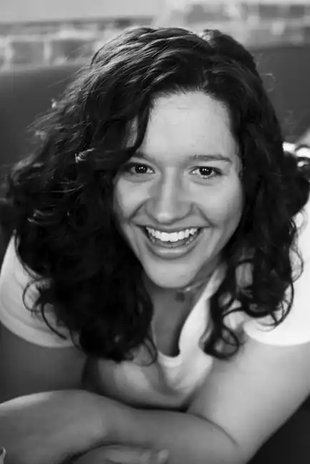

Кіра Касс народилася 19 травня 1981 року в Мертл-Біч, округа Горрі, штат Південна Кароліна, США. Закінчила Редфордскій університет, в який перевелася з прибережного Каролінського університету.
У 2009 році вона написала роман "Сирена". "Відбір" — перший роман з однойменної трилогії, був виданий в 2012 році видавництвом HarperTeen. Книга була позитивно прийнята критиками. У 2013 вийшло продовження першої частини– "Еліта"; заключний роман трилогії побачив світ в 2014 році. Права на зйомки однойменних фільмів за трилогією були викуплені кінокомпанією Warner Bros.
У травні 2013 року Кіра Касс оголосила про роботу над новою серією книг під робочою назвою "238". У 2015 і 2016 роках вийшли дві книги про дочку головної героїні серії "Відбір".